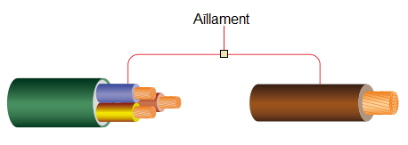

En les instal·lacions elèctriques d'interior el conductors elèctrics han d'estar aïllats i anomenem aïllant al material que recobreix al conductor.

La funció de l'aïllant és impedir que hi hagin fuites de corrent, es a dir, que tot el corrent que subministra el generador arribi al receptor elèctric.
Fonamentalment s'utilitzen dos tipus de materials aïllants:
- els derivats dels plàstics (polímers):
- V: PVC (policlorur de vinil plàstic
- Z1: Poliolefina termoplàstica amb baixa emissió de gasos corrosius i fums (lliure de halogens)
- R: XLPE (polietilè reticulat)
- els derivats del cautxú o gomes (elastòmers)
- Z: Poliolefina termoestable lliure d'halogens
- D: EPR (etilè propilè)
Material que ha de ser utilitzat obligatòriament en instal·lacions on s'exigeixi baixes emissions de fums i gasos corrosius en cas d'incendi.